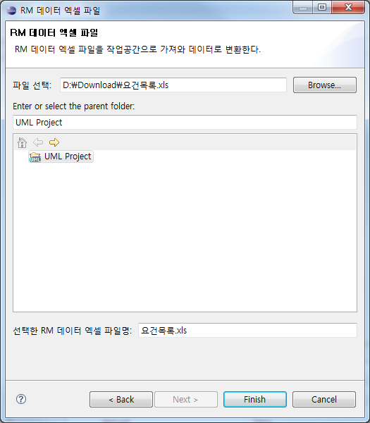
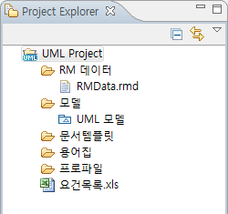
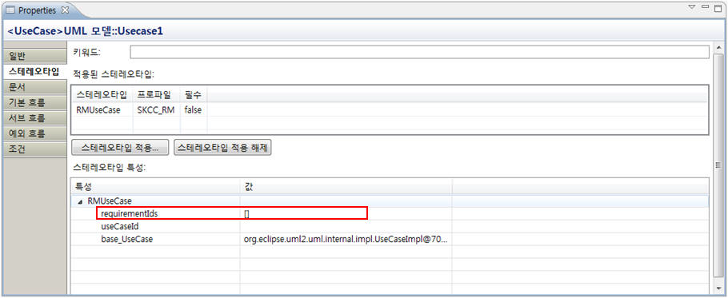

1. Boundary, Control, Entity 스테레오타입 적용
특성 창의 [스테레오타입] 탭에서 각 UML 요소의 스테레오타입을 편집할 수 있습니다.
1.1 모델에 프로파일 적용
Boundary, Control, Entity 스테레오타입을 적용하기 위해서는 스테레오타입을 적용할 UML 요소가 속해 있는 UML 모델에 [SKCC_MDA_Analysis_Model] 프로파일이 적용되어 있어야 합니다.

1.2 특성 창에서 스테레오타입 적용
프로파일이 정상적으로 적용되었다면 [클래스] 요소에 Boundary, Control, Entity 스테레오타입을 적용할 수 있습니다.
프로젝트 탐색기나 다이어그램 편집기에서 해당 클래스를 선택한 후, 특성 창의 [스테레오타입] 탭에서 [스테레오타입 적용...] 버튼을 클릭하면 Boundary, Control, Entity 스테레오타입을 선택할 수 있는 팝업창이
나타납니다. 이 팝업창에서, 적용하고자 하는 스테레오타입을 선택한 후 체크박스에 체크 표시를 하고 [OK] 버튼을 클릭하면, 해당 클래스에 스테레오타입이 적용됩니다.

2. 요구사항관리도구(RM)용 스테레오타입 적용
RM 유스케이스 아이디를 입력하여 요구사항에서 UML 모델까지의 추적성을 확보하기 위해서 요구사항관리도구(RM)용 스테레오타입을 적용합니다.
2.1 모델에 RM 프로파일 적용
해당 유스케이스가 속해 있는 UML 모델에 RM 프로파일을 적용합니다.

2.2 RM 데이터 파일 가져오기
해당 프로젝트에서 마우스 오른쪽 클릭 > [Import]를 선택합니다.

[Import] 메뉴를 선택한 후 나타나는 다이얼로그에서 [NEXCORE UML 모델러] 카테고리 하위의 [RM 데이터 엑셀 파일]을 선택하고 [Next] 버튼을 클릭합니다.

RM 데이터 엑셀 파일을 선택하여 가져올 수 있는 다이얼로그가 새로 나타납니다. [파일 선택] 영역에서 RM 데이터 엑셀 파일을 선택하고, 데이터 파일을 가져와서 저장할 프로젝트를 선택한 후 [Finish] 버튼을 클릭합니다. 이 때 Import할 위치는 프로젝트가 되어야 합니다.

RM 데이터 엑셀 파일이 정상적으로 Import 되었다면 다음과 같이 프로젝트 하위에 [RM 데이터] 폴더가 생성되고, 이 폴더 아래에 RM 데이터가 생성됩니다.

RM 유스케이스 아이디를 생성할 유스케이스를 프로젝트 탐색기나 다이어그램 편집기에서 선택한 후, 특성 창의 [스테레오타입] 탭에서 [스테레오타입 적용...] 버튼을 클릭하고 [RMUseCase] 스테레오타입을 선택합니다.

[RMUseCase] 스테레오타입이 적용된 유스케이스는, [스테레오타입] 탭의 하단에 있는 [스테레오타입 특성] 섹션에 [RMUseCase] 관련 정보를 입력할 수 있는 부분이 나타납니다. 여기서 [requirementIds]를 클릭합니다.

RM Usecase의 requirement ID를 선택할 수 있는 다음과 같은 다이얼로그가 나타납니다.

여기서 RM Usecase의 requirement ID를 선택한 후 [OK] 버튼을 클릭하면 해당 유스케이스에 RM Usecase Requirement ID가 적용됩니다.